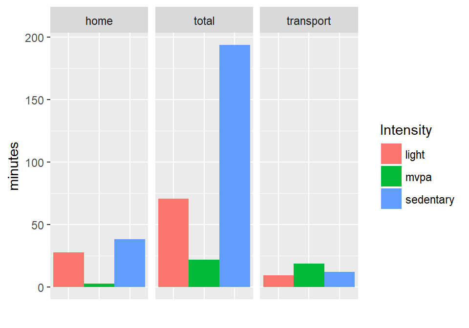
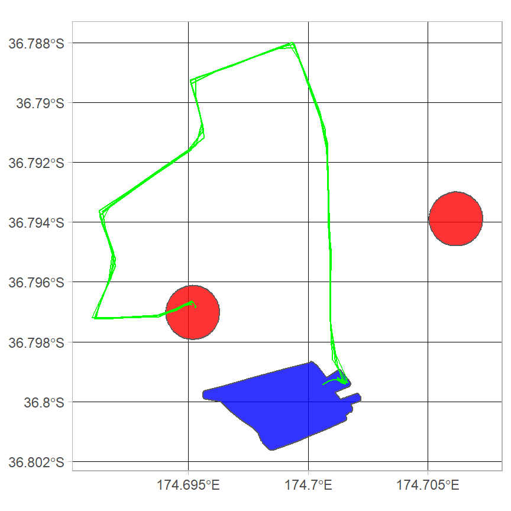

Getting started with palmsplusr
2018-01-17
Loading the PALMS dataset
A PALMS dataset (in csv format) is read in using the read_palms() function. This function checks that all required column names are present before converting the csv file to a simple features (spatial) object. If any columns are missing you will receive an error message. For a list of required column names, please see the read_palms() help file. This example will use the data built into this package, which has been collected from one participant.
library(palmsplusr)
palms <- read_palms(system.file("extdata", "one_participant.csv", package = "palmsplusr"))
names(palms)
#> [1] "identifier" "datetime" "dow"
#> [4] "fixtypecode" "iov" "tripnumber"
#> [7] "triptype" "tripmot" "activity"
#> [10] "activityintensity" "activityboutnumber" "sedentaryboutnumber"
#> [13] "geometry"This palms object contains 13 columns. Notice how the lon and lat columns that were present in the csv have been replaced by a geometry column. This is POINT geometry, as each row in palms represents a point. You can plot this data to look at the distribution of points in space. Here two columns are plotted:
plot(palms[, c("activity", "tripnumber")])Building palmsplus
The palmsplus build process adds additional columns (i.e., fields) to the input palms dataset shown above. However, the user needs to specify what columns to add, and how to calculate them. This is done by creating a table with the name of the new column and the formula used to calculate it. In most cases, new fields are calculated from combinations of existing fields, but external data may also be used (see next section).
The function palms_add_field(name, formula, domain_field = FALSE) is used to add a field:
palms_add_field("weekday", "dow < 6")
palms_add_field("weekend", "dow > 5")
palms_add_field("indoors", "iov == 3")
palms_add_field("outdoors", "iov == 1")
palms_add_field("in_vehicle", "iov == 2")
palms_add_field("inserted", "fixtypecode == 6")
palms_add_field("pedestrian", "tripmot == 1")
palms_add_field("bicycle", "tripmot == 2")
palms_add_field("vehicle", "tripmot == 3")
palms_add_field("nonwear", "activityintensity < 0", TRUE)
palms_add_field("wear", "activityintensity >= 0", TRUE)
palms_add_field("sedentary", "activityintensity == 0", TRUE)
palms_add_field("light", "activityintensity == 1", TRUE)
palms_add_field("moderate", "activityintensity == 2", TRUE)
palms_add_field("vigorous", "activityintensity == 3", TRUE)
palms_add_field("mvpa", "moderate + vigorous", TRUE)Note this is for the purpose of demonstration, as the code above can be replicated using palms_load_defaults(). The third parameter, domain_field, specifies whether the field should be summarized when creating the days dataset (see Building days below for more info).
Each time you add a new field, a new row is appended to the palmsplus_fields table. This table is automatically created in the global environment when adding fields. If this table is printed, you will see it contains the fields that were just added:
palmsplus_fields| name | formula | domain_field |
|---|---|---|
| weekday | dow < 6 | FALSE |
| weekend | dow > 5 | FALSE |
| indoors | iov == 3 | FALSE |
| outdoors | iov == 1 | FALSE |
| in_vehicle | iov == 2 | FALSE |
| inserted | fixtypecode == 6 | FALSE |
| pedestrian | tripmot == 1 | FALSE |
| bicycle | tripmot == 2 | FALSE |
| vehicle | tripmot == 3 | FALSE |
| nonwear | activityintensity < 0 | TRUE |
| wear | activityintensity >= 0 | TRUE |
| sedentary | activityintensity == 0 | TRUE |
| light | activityintensity == 1 | TRUE |
| moderate | activityintensity == 2 | TRUE |
| vigorous | activityintensity == 3 | TRUE |
| mvpa | moderate + vigorous | TRUE |
Using external data
Any variable from the palms dataset can be used to build formulas, although the true power of palmsplusr comes from integrating external data into these calculations.
In the code below, a shapefile that represents home points is read in and buffered by 100 m to create polygons. These polygons are going to be used in a field formula. When this data is plotted, you will notice this person has two homes:
home.points <- read_sf(system.file("extdata/shapefiles/", "home.shp", package = "palmsplusr"))
home.buffer <- palms_buffer(point = home.points, distance = 100)
# Plot
plot(home.buffer[, "home_id"], key.pos = 1)
plot(home.points[, "home_id"], col = "red", add = TRUE)Below, these polygon data are used to create a new field called at_home. The purpose of this field is to identify any palms point that fall inside these home.buffer polygons. This information is later used to determine the time spent at home each day, and even identify trips that start or end at home. The formula for this field uses the palms_in_polygon() helper function. For a more detailed explanation about helper functions and creating formulas in general, please see the building formulas article.
palms_add_field("at_home", "palms_in_polygon(., home.buffer, identifier)")Once all of the fields have been added, you can build the palmsplus dataset using the palms_build_palmsplus() function. This takes the palms dataset as input:
palmsplus <- palms_build_palmsplus(palms)
#> [1/1] Computed palmsplus for: BC0627When printing the column names of the palmsplus dataset, you will notice it contains 30 columns: the original 13 in palms plus the 17 that were added as fields:
names(palmsplus)
#> [1] "identifier" "datetime" "dow"
#> [4] "fixtypecode" "iov" "tripnumber"
#> [7] "triptype" "tripmot" "activity"
#> [10] "activityintensity" "activityboutnumber" "sedentaryboutnumber"
#> [13] "weekday" "weekend" "indoors"
#> [16] "outdoors" "in_vehicle" "inserted"
#> [19] "pedestrian" "bicycle" "vehicle"
#> [22] "nonwear" "wear" "sedentary"
#> [25] "light" "moderate" "vigorous"
#> [28] "mvpa" "at_home" "geometry"Now that the palmsplus dataset is built, it can be summarized in two ways: building days, or building trajectories.
Building days
The days dataset provides a daily summary of the domain_fields present in the palmsplus dataset. Recall the domain_fields in the dataset above were:
- nonwear
- wear
- sedentary
- light
- moderate
- vigorous
- mvpa
These fields are summarized across several domains, which can be thought of as temporal or spatial subsets of a 24-hour day. Examples domains are: during work hours, in greenspace, at home, in the town centre on weekends.
Each of the domain_fields are summarized separately for each domain. By default, a total domain is used, which summarizes all data within each 24-hour period. Any additional domains need to be specified by the user.
Two additional domains are added below: home and transport. All palmsplus points that meet the at_home criteria (the field added above) will be added to the home domain. All palmsplus points that meet the pedestrian or bicycle or vehicle criteria (also fields added above) will be assigned to the transport domain. Domains are added the same way fields are added:
palms_add_domain("home", "at_home")
palms_add_domain("transport", "!home & (pedestrian | bicycle | vehicle)")palmsplus_domains| name | formula |
|---|---|
| home | at_home |
| transport | !home & (pedestrian | bicycle | vehicle) |
It is important to note that formulas are evaluated in the order they are specified, so one formula can contain another field name, as seen with the !home (not home) in transport domain formula above.
Now that additional domains have been added, the palms_build_days() function can be used to build days from the palmsplus dataset:
days <- palms_build_days(palmsplus)When looking at the structure of the days dataset, you will notice the domain_fields have been summarized for each domain. Note that the total domain and the duration field are included by default.
str(days)
#> Classes 'tbl_df', 'tbl' and 'data.frame': 9 obs. of 26 variables:
#> $ identifier : chr "BC0627" "BC0627" "BC0627" "BC0627" ...
#> $ date : Date, format: "2013-08-26" "2013-08-27" ...
#> $ total_nonwear : num 344 954 501 354 1306 ...
#> $ total_wear : num 427 486 557 0 134 ...
#> $ total_sedentary : num 273 328 388 0 49 ...
#> $ total_light : num 101 120.2 126.8 0 81.2 ...
#> $ total_moderate : num 31 25 26.75 0 4.25 ...
#> $ total_vigorous : num 22 13.2 15.8 0 0 ...
#> $ total_mvpa : num 53 38.25 42.5 0 4.25 ...
#> $ total_duration : num 771 1440 1058 354 1440 ...
#> $ home_nonwear : num 344 871 501 354 1306 ...
#> $ home_wear : num 4.5 58 150.2 0 134.5 ...
#> $ home_sedentary : num 0 41.2 102.5 0 49 ...
#> $ home_light : num 2.5 13.8 41.5 0 81.2 ...
#> $ home_moderate : num 0.75 3 4.5 0 4.25 4.5 0.75 1.25 1.25
#> $ home_vigorous : num 1.25 0 1.75 0 0 0 0.25 1 0.25
#> $ home_mvpa : num 2 3 6.25 0 4.25 4.5 1 2.25 1.5
#> $ home_duration : num 348 929 652 354 1440 ...
#> $ transport_nonwear : num 0 0 0 NA NA 0 NA 0 0
#> $ transport_wear : num 46 38.5 40.2 NA NA ...
#> $ transport_sedentary: num 2 5.25 4.25 NA NA 34 NA 6 22.5
#> $ transport_light : num 13.5 8.25 13.75 NA NA ...
#> $ transport_moderate : num 15.8 14.8 13 NA NA ...
#> $ transport_vigorous : num 14.75 10.25 9.25 NA NA ...
#> $ transport_mvpa : num 30.5 25 22.2 NA NA ...
#> $ transport_duration : num 46 38.5 40.2 NA NA ...A summary plot of activity intensities for each domain, using these data:

Building trajectories
The trajectories dataset contains individual trips, and trip-level summaries. Fields that you wish to calculate for each trajectory can be specified with palms_add_trajectoy_field(name, formula, after_conversion = FALSE). The data passed to trajectory formulas are all of the palmsplus points that have the same tripnumber (i.e., belong to the same trip).
epoch <- palms_epoch(palms)
palms_add_trajectory_field("mot", "first(tripmot)")
palms_add_trajectory_field("date", "first(as.Date(datetime))")
palms_add_trajectory_field("start", "datetime[triptype==1]")
palms_add_trajectory_field("end", "datetime[triptype==4]")
palms_add_trajectory_field("duration", "as.numeric(difftime(end, start, units = \"secs\") + epoch)")
palms_add_trajectory_field("nonwear", "sum(activityintensity < 0) * epoch")
palms_add_trajectory_field("wear", "sum(activityintensity >= 0) * epoch")
palms_add_trajectory_field("sedentary", "sum(activityintensity == 0) * epoch")
palms_add_trajectory_field("light", "sum(activityintensity == 1) * epoch")
palms_add_trajectory_field("moderate", "sum(activityintensity == 2) * epoch")
palms_add_trajectory_field("vigorous", "sum(activityintensity == 3) * epoch")
palms_add_trajectory_field("mvpa", "moderate + vigorous")
palms_add_trajectory_field("length", "as.numeric(st_length(.))", TRUE)
palms_add_trajectory_field("speed", "(length / duration) * 3.6", TRUE)Notice the palms_epoch() helper function is used here, and the epoch length is used in some formulas. This is so the output is in seconds, rather than a row count.
Similar to above, these example trajectory fields are the default fields, and can be built with the palms_load_defaults() function. Note that an epoch length must be supplied so the formulas are built correctly: palms_load_defaults(palms_epoch(palms)).
Because trajectories are built from the palmsplus dataset, any variables used in the trajectory field formulas should be present in the palmsplus dataset.
trajectory_fields| name | formula | after_conversion |
|---|---|---|
| mot | first(tripmot) | FALSE |
| date | first(as.Date(datetime)) | FALSE |
| start | datetime[triptype==1] | FALSE |
| end | datetime[triptype==4] | FALSE |
| duration | as.numeric(difftime(end, start, units = “secs”) + epoch) | FALSE |
| nonwear | sum(activityintensity < 0) * epoch | FALSE |
| wear | sum(activityintensity >= 0) * epoch | FALSE |
| sedentary | sum(activityintensity == 0) * epoch | FALSE |
| light | sum(activityintensity == 1) * epoch | FALSE |
| moderate | sum(activityintensity == 2) * epoch | FALSE |
| vigorous | sum(activityintensity == 3) * epoch | FALSE |
| mvpa | moderate + vigorous | FALSE |
| length | as.numeric(st_length(.)) | TRUE |
| speed | (length / duration) * 3.6 | TRUE |
The after_conversion parameter dictates whether the fields are calculated before or after the trip points are converted to LINESTRING geometry. Some fields can only be calculated on LINESTRING objects, such as the length of the line (and by extension, speed).
The palms_build_trajectories() function is used to build trajectories from the palmsplus dataset:
trajectories <- palms_build_trajectories(palmsplus)When looking at the structure of the trajectories dataset, you will notice it contains the fields created above, and LINESTRING geometry:
str(trajectories, give.attr = FALSE)
#> Classes 'sf' and 'data.frame': 38 obs. of 17 variables:
#> $ identifier: chr "BC0627" "BC0627" "BC0627" "BC0627" ...
#> $ tripnumber: int 1 2 3 4 5 6 7 8 9 10 ...
#> $ mot : int 1 1 1 1 1 1 1 3 1 1 ...
#> $ date : Date, format: "2013-08-26" "2013-08-26" ...
#> $ start : POSIXct, format: "2013-08-26 11:08:45" "2013-08-26 13:29:45" ...
#> $ end : POSIXct, format: "2013-08-26 11:11:30" "2013-08-26 13:32:15" ...
#> $ duration : num 180 165 555 255 675 1230 555 480 165 225 ...
#> $ nonwear : num 0 0 0 0 0 0 0 0 0 0 ...
#> $ wear : num 180 165 555 255 675 1230 555 480 165 225 ...
#> $ sedentary : num 30 0 60 60 0 90 15 285 0 45 ...
#> $ light : num 45 75 285 135 435 195 75 150 0 105 ...
#> $ moderate : num 0 45 150 45 195 510 195 45 60 75 ...
#> $ vigorous : num 105 45 60 15 45 435 270 0 105 0 ...
#> $ mvpa : num 105 90 210 60 240 945 465 45 165 75 ...
#> $ length : num 198 125 518 129 401 ...
#> $ speed : num 3.97 2.74 3.36 1.82 2.14 ...
#> $ geometry :sfc_LINESTRING of length 38; first list element: XY [1:12, 1:2] 175 175 175 175 175 ...As the trajectories dataset contains LINESTRING geometry, it can be plotted. Below the trajectories are colored based on the mot column, and the home.buffer polygons are added to the plot:
plot(trajectories[, "mot"], pal = c("orange", "blue"), key.pos = NULL)
plot(home.buffer[, 1], col = "red", key.pos = NULL, add = TRUE)
Adding trajectory locations
Trajectory locations can also be calculated. These are used to identify specific trip start and end locations, such as trips from home to work or school. Trajectory locations are added with the function palms_add_trajectory_location(name, start_criteria, end_criteria). If any trajectory locations have been added, they will automatically be calculated when palms_build_trajectories() is executed.
The start_criteria and end_criteria parameters should be fields already calculated in palmsplus.
To demonstrate, all trajectories that start at home and end at school will be identified. To do this, an additional shapefile that contains the schoolyard polygon is read in, and add a new at_school field is added to palmsplus.
school <- read_sf(system.file("extdata/shapefiles/", "school.shp", package = "palmsplusr"))
palms_add_field("at_school", "palms_in_polygon(., school)")
palmsplus <- palms_build_palmsplus(palms)
#> [1/1] Computed palmsplus for: BC0627Now that palmsplus contains the at_school field, I’m going to add a trajectory_location that starts at_home and ends at_school. Recall the at_home field was created earlier.
palms_add_trajectory_location("home_school", "at_home", "at_school")trajectory_locations| name | start_criteria | end_criteria |
|---|---|---|
| home_school | at_home | at_school |
Now the trajectories dataset can be rebuilt. Additional columns will be added for each entry in the trajectory_locations table indicating whether the trajectory meets both the start and end criteria.
trajectories <- palms_build_trajectories(palmsplus)
names(trajectories)
#> [1] "identifier" "tripnumber" "mot" "date" "start"
#> [6] "end" "duration" "nonwear" "wear" "sedentary"
#> [11] "light" "moderate" "vigorous" "mvpa" "home_school"
#> [16] "length" "speed" "geometry"Notice how the trajectories dataset now contains a home_school column, which signifies whether the trip started at home and ended at school. In total, 4/38 trajectories meet this criteria:
table(trajectories$home_school)
#>
#> 0 1
#> 34 4We can double check the results by plotting these trajectories. The ggplot2 package can also be used instead of R’s base plot. Please see the article ggplot2 and palmsplusr for more informaiton.
library(ggplot2)
ggplot() +
geom_sf(data=home.buffer, fill = "red", alpha = 0.8) +
geom_sf(data=school, fill = "blue", alpha = 0.8) +
geom_sf(data=trajectories %>% filter(home_school == 1), colour = "green") +
theme_light()
It looks like all the trajectories where home_school == 1 start at home and end at school.
Building multimodal trajectories
The trajectories dataset can be further processed into multimodal trips using the palms_build_multimodal() function. This will join two or more trajectories together if they are within a spatial and temporal threshold.
Multimodal trajectories are important, because PALMS assigns a new trip number each time the travel mode changes. A change in travel mode part way along a commute may mean none of the trip ‘segments’ meet the start_criteria and end_criteria.
This is also useful for identifying trip chains and transit use (e.g., walk-vehicle-walk), and joining trips where a long pause has occured.
The fields that are summarized for each multimodal trajectory are specified using palms_add_multimodal_field(name, func).
The name refers to a field name in the trajectories dataset, while func specifies a summary function used to aggregate trajectory fields (usually sum() or mean()). For example, you probably want to sum the duration of multiple segments, but take the average (mean) of their speeds.
palms_add_multimodal_field("duration", "sum")
palms_add_multimodal_field("speed", "mean")Alternatively, you can pass in a vector of field names that use the same summary function:
palms_add_multimodal_field(c("nonwear", "wear", "sedentary", "light", "moderate",
"vigorous", "mvpa", "length"), "sum")multimodal_fields| name | func |
|---|---|
| duration | sum |
| speed | mean |
| nonwear | sum |
| wear | sum |
| sedentary | sum |
| light | sum |
| moderate | sum |
| vigorous | sum |
| mvpa | sum |
| length | sum |
It should be noted that these multimodal_fields are the default fields created by palms_load_defaults().
The trajectories dataset is then passed to palms_build_multimodal(spatial_threshold, temporal_threshold) to build the multimodal dataset.
The spatial_threshold is the distance (in meters) between the end of one trajectory and the start of the next, while the temporal_threshold is the time between these (in minutes). This example uses a criteria of 200 m and 10 minutes:
multimodal <- palms_build_multimodal(trajectories, 200, 10)
#> Calculating multimodal eligibility...done
#> Assigning trip numbers...done
#> Calculating fields...doneAn important note is the trajectories dataset must contain the following columns, as multimodal eligibility cannot be assessed without them:
- identifier
- tripnumber
- start
- end
- geometry
- mot
When looking at the structure of the multimodal dataset, you will notice basic multimodal information, an overall summary for each field, and also for each travel mode (note this participant has no bicycle trips):
str(multimodal, give.attr = FALSE)
#> Classes 'sf', 'tbl_df', 'tbl' and 'data.frame': 31 obs. of 39 variables:
#> $ identifier : chr "BC0627" "BC0627" "BC0627" "BC0627" ...
#> $ mmt_number : int 1 2 3 4 5 6 7 8 9 10 ...
#> $ trip_numbers : chr "1" "2" "3-4" "5-6" ...
#> $ n_segments : int 1 1 2 2 1 2 1 1 1 1 ...
#> $ mot_order : chr "1" "1" "1-1" "1-1" ...
#> $ start : POSIXct, format: "2013-08-26 11:08:45" "2013-08-26 13:29:45" ...
#> $ end : POSIXct, format: "2013-08-26 11:11:30" "2013-08-26 13:32:15" ...
#> $ home_school : int 0 0 0 0 0 1 0 0 0 0 ...
#> $ mot_1_duration : num 180 165 810 1905 555 ...
#> $ mot_1_length : num 198 125 647 1620 625 ...
#> $ mot_1_light : num 45 75 420 630 75 0 105 75 195 420 ...
#> $ mot_1_moderate : num 0 45 195 705 195 60 75 15 495 360 ...
#> $ mot_1_mvpa : num 105 90 270 1185 465 ...
#> $ mot_1_nonwear : num 0 0 0 0 0 0 0 0 0 0 ...
#> $ mot_1_sedentary: num 30 0 120 90 15 0 45 0 90 15 ...
#> $ mot_1_vigorous : num 105 45 75 480 270 105 0 60 435 30 ...
#> $ mot_1_wear : num 180 165 810 1905 555 ...
#> $ mot_3_duration : num 0 0 0 0 0 480 0 0 0 0 ...
#> $ mot_3_length : num 0 0 0 0 0 ...
#> $ mot_3_light : num 0 0 0 0 0 150 0 0 0 0 ...
#> $ mot_3_moderate : num 0 0 0 0 0 45 0 0 0 0 ...
#> $ mot_3_mvpa : num 0 0 0 0 0 45 0 0 0 0 ...
#> $ mot_3_nonwear : num 0 0 0 0 0 0 0 0 0 0 ...
#> $ mot_3_sedentary: num 0 0 0 0 0 285 0 0 0 0 ...
#> $ mot_3_vigorous : num 0 0 0 0 0 0 0 0 0 0 ...
#> $ mot_3_wear : num 0 0 0 0 0 480 0 0 0 0 ...
#> $ duration : num 180 165 810 1905 555 ...
#> $ nonwear : num 0 0 0 0 0 0 0 0 0 0 ...
#> $ wear : num 180 165 810 1905 555 ...
#> $ sedentary : num 30 0 120 90 15 285 45 0 90 15 ...
#> $ light : num 45 75 420 630 75 150 105 75 195 420 ...
#> $ moderate : num 0 45 195 705 195 105 75 15 495 360 ...
#> $ vigorous : num 105 45 75 480 270 105 0 60 435 30 ...
#> $ mvpa : num 105 90 270 1185 465 ...
#> $ length : num 198 125 647 1620 625 ...
#> $ mot_1_speed : num 3.97 2.74 2.59 2.85 4.06 ...
#> $ mot_3_speed : num NA NA NA NA NA ...
#> $ speed : num 3.97 2.74 2.59 2.85 4.06 ...
#> $ geometry :sfc_MULTILINESTRING of length 31; first list element: List of 1
#> ..$ : num [1:12, 1:2] 175 175 175 175 175 ...Recall there were 38 observations in the trajectories dataset. We can see what trajectories were combined by looking at the trip_numbers variable:
multimodal$trip_numbers
#> [1] "1" "2" "3-4" "5-6" "7" "8-9"
#> [7] "10" "11" "12" "13" "14-15" "16"
#> [13] "17" "18" "19" "20" "21" "22"
#> [19] "23" "24" "25" "26" "27" "28"
#> [25] "29" "30" "31" "32" "33-34" "35"
#> [31] "36-37-38"The mot_order variable retains the mode of travel order of each multimodal trip:
multimodal$mot_order
#> [1] "1" "1" "1-1" "1-1" "1" "3-1" "1" "1"
#> [9] "1" "1" "3-1" "1" "1" "1" "1" "1"
#> [17] "1" "3" "3" "3" "3" "1" "1" "1"
#> [25] "1" "1" "1" "1" "3-1" "1" "1-3-1"If any trajectory_locations were created, they will also be added to multimodal (notice the home_school field in the multimodal structure above).
Saving geometry and results
You can save all datasets as a csv file. The palmsplus, trajectories and multimodal datasets can be saved as ESRI shapefiles as they contain geometry:
write_csv(palmsplus, "palmsplus.csv")
write_csv(days, "days.csv")
write_csv(trajectories, "trajectories.csv")
write_csv(multimodal, "multimodal.csv")
st_write(palmsplus, "palmsplus.shp")
st_write(trajectories, "trajecories.shp")
st_write(multimodal, "multimodal.shp")